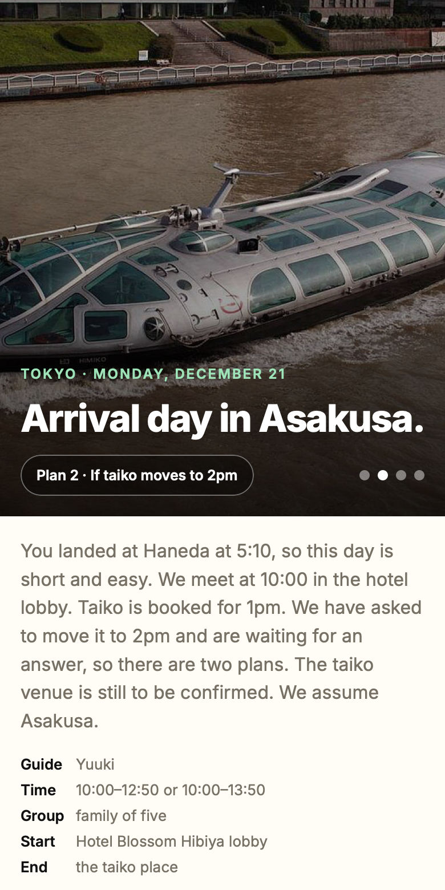
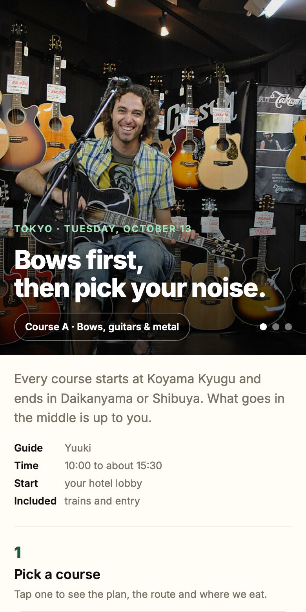
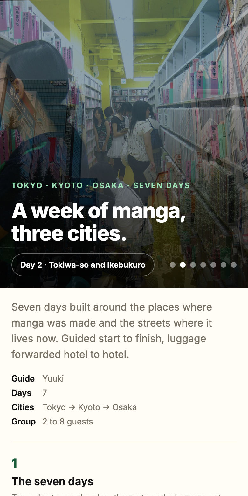
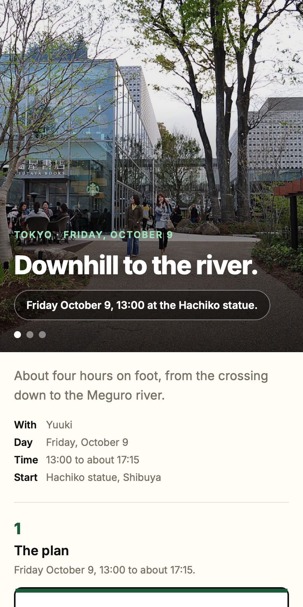
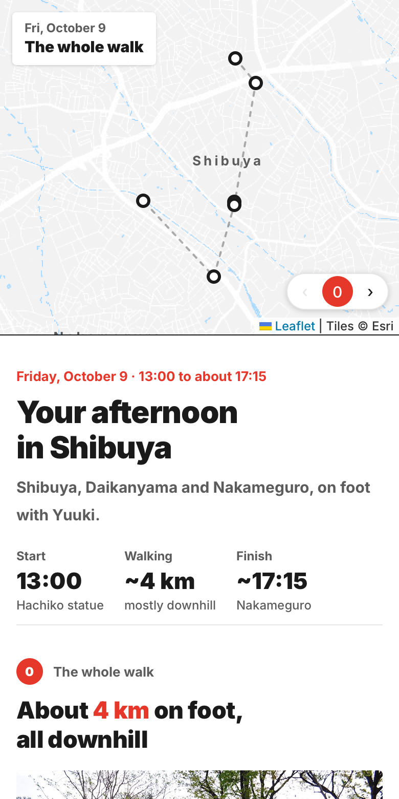

Pages you can forward
Each one is a single link. Your client opens it, picks a plan, and replies. No login, no app, works on a phone.

Tokyo arrival day
Two plans around a taiko class, plus five lunch spots to pick from.

A one-day Tokyo plan for one guest
Three routes built around his interests: a kyudo shop, record stores, a wrestling shop.

Manga week
A seven-day manga trip across three cities, day by day.

Today's walk
The page for this afternoon.

Today's walk, as a map booklet
The same afternoon as a scrolling map. Each stop lights up as you read.
What every Tokyo day comes with
A short questionnaire before the day
Favorite shows, food limits, walking pace. From the answers I make a one-page plan just for that guest.
A small gift that matches what they love
For a father and his teen daughter, a book from the show she loves and some Pokémon cards. They loved it.
A shelf of ready routes
Half-day and full-day routes I have already walked, so a new request starts from a tested plan.
Photos the same evening
One private link: the best photos of the day, a slideshow, a map of where each was taken, and a download-all button. A couple from Montana got theirs a few hours after each day.
More on the Akihabara anime tour ↗ and @yukianimesensei ↗
Small things your clients will thank you for
Two things to decide next
Dec 21 · family of five · taiko class
Keep the class at 13:00, or move it to 14:00? 14:00 gives a calm lunch and a boat ride to Asakusa.
Manga week
Tell me the group size and the dates, and I will fix the day-by-day plan.